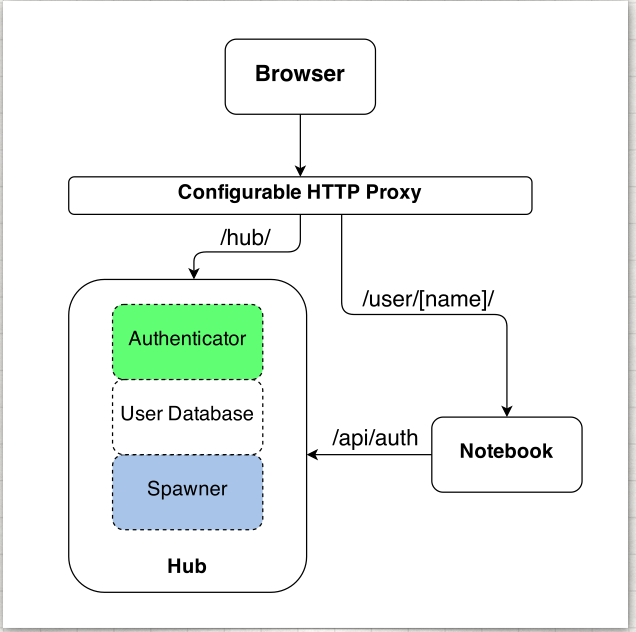

一、概述
JupyterHub是一个多用户Hub，它生成，管理和代理单用户Jupyter笔记本服务器的多个实例
三个子系统组成JupyterHub：
- 多用户中心（tornado process）
- 可配置的http代理（node-http-proxy）
- 多个单用户jupyter notebook服务器（Python/IPython/tornado）
JupyterHub执行以下功能：
- Hub启动代理
- 默认情况下，代理会将所有请求转发到Hub
- Hub处理用户登录并按需生成单用户服务器
- Hub将代理配置为将URL前缀转发给单用户笔记本服务器
为方便管理Hub，其用户和服务，JupyterHub还提供REST API。

二、安装
1，先决条件
在安装JupyterHub之前，您需要：
基于Linux / Unix的系统
nodejs / npm。使用操作系统的软件包管理器安装nodejs / npm。
---如果您正在使用**`conda`**，将通过conda为您安装nodejs和npm依赖项。 ----如果您正在使用**`pip`**，请安装最新版本的[nodejs / npm](https://docs.npmjs.com/getting-started/installing-node)。例如，使用以下命令在Linux（Debian / Ubuntu）上安装它：
sudo apt-get install npm nodejs-legacy
该`nodejs-legacy`软件包安装`node`可执行文件，目前npm需要在Debian / Ubuntu上运行。
用于HTTPS通信的TLS证书和密钥
域名
在运行单用户笔记本服务器（可能与集线器在同一系统上）之前，您需要：
- jupyter notebook 版本4或者更高版本
2，安装
JupyterHub可以安装pip（和代理npm）或conda：
pip，npm：
python3 -m pip install jupyterhub
npm install -g configurable-http-proxy
python3 -m pip install notebook # needed if running the notebook servers locally
conda（一个命令安装jupyterhub和proxy）：
conda install -c conda-forge jupyterhub # installs jupyterhub and proxy
conda install notebook # needed if running the notebook servers locally
测试您的安装。如果已安装，这些命令应返回包的帮助内容：
jupyterhub -h
configurable-http-proxy -h
3，启动Hub服务器
要启动Hub服务器，请运行以下命令：
jupyterhub
访问https://localhost:8000您的浏览器，然后使用您的unix凭据登录。
要允许多个用户登录到Hub服务器，您必须jupyterhub以特权用户身份启动，例如root：
sudo jupyterhub